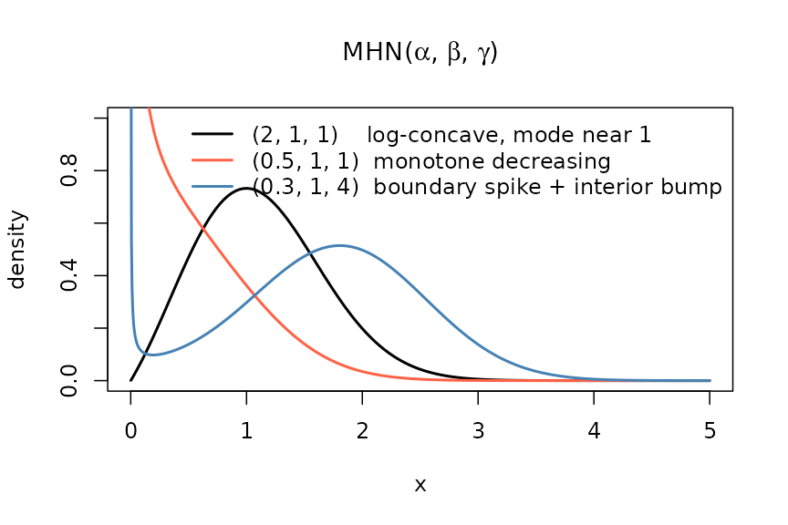
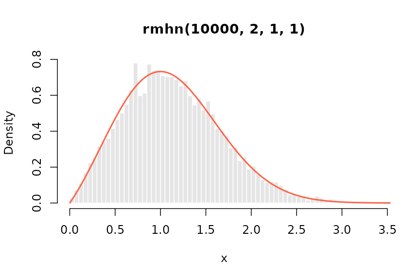
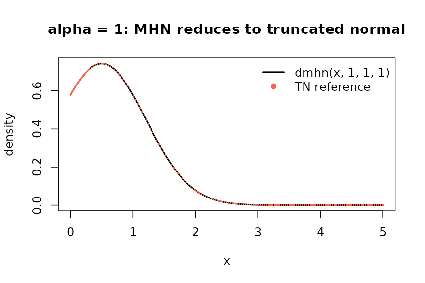

The mhn package provides density, distribution, quantile, and random generation functions for the Modified Half-Normal (MHN) distribution, plus helpers for its moments and mode. This vignette walks through the basic usage of every exported function.
The MHN distribution
The MHN(, , ) distribution has support on and density
where , , , and is the Fox–Wright function used as the normalising constant (Sun, Kong & Pal 2023). The three parameters control the polynomial factor , the Gaussian tail , and the exponential tilt respectively.
Density: dmhn()
dmhn() evaluates the density (or log-density) at one or
more points:
dmhn(c(0.5, 1, 2), alpha = 2, beta = 1, gamma = 1)
#> [1] 0.4702986 0.7325378 0.1982764
dmhn(1, alpha = 2, beta = 1, gamma = 1, log = TRUE)
#> [1] -0.3112403It is vectorised over both x and the parameters, with
standard R recycling:
dmhn(c(0.5, 1, 1.5), alpha = c(1, 2), beta = 1, gamma = c(0, 1, -1))
#> [1] 0.87878258 0.73253783 0.04310111
x <- c(seq(0.001, 0.3, length.out = 60), seq(0.3, 5, length.out = 140))
plot(x, dmhn(x, alpha = 2, beta = 1, gamma = 1),
type = "l", lwd = 2, ylab = "density", ylim = c(0, 1),
main = expression("MHN(" * alpha * ", " * beta * ", " * gamma * ")"))
lines(x, dmhn(x, alpha = 0.5, beta = 1, gamma = 1), lwd = 2, col = "tomato")
lines(x, dmhn(x, alpha = 0.3, beta = 1, gamma = 4), lwd = 2, col = "steelblue")
legend("topright", bty = "n",
legend = c("(2, 1, 1) log-concave, mode near 1",
"(0.5, 1, 1) monotone decreasing",
"(0.3, 1, 4) boundary spike + interior bump"),
col = c("black", "tomato", "steelblue"), lwd = 2)
MHN densities for three parameter triples; the steelblue curve sits in the alpha < 1, gamma >> 0 regime where the density combines a boundary divergence at x to 0+ with an interior local maximum near x = 1.8 (Sun et al. 2023, Lemma 3c). The y-axis is clipped at 1; the divergent left tails of the tomato and steelblue curves continue upward beyond the plot.
Distribution function: pmhn()
pmhn() returns
(or its complement / log-probability via lower.tail /
log.p). For the general case it evaluates the Sun et
al. (2023) Lemma 1b series in log space, truncated at the constructive
bound
from Sun et al. (2023, Supplementary Lemma 10(d)). When the underlying
double-precision cancellation in the alternating-sign accumulator for
would exceed the user’s tolerance, the routine falls back to a
peak-normalised Boost.Math quadrature (Gauss–Kronrod for
,
tanh–sinh for
)
of the unnormalised density.
pmhn(c(0.5, 1, 1.5, 2), alpha = 2, beta = 1, gamma = 1)
#> [1] 0.1129101 0.4338796 0.7614259 0.9363038
pmhn(2, alpha = 2, beta = 1, gamma = 1, lower.tail = FALSE)
#> [1] 0.06369619
pmhn(2, alpha = 2, beta = 1, gamma = 1, log.p = TRUE)
#> [1] -0.06581527A direct cross-check against integrate(dmhn, 0, q)
confirms accuracy:
q <- 1.5
ref <- integrate(function(x) dmhn(x, 2, 1, 1), 0, q,
rel.tol = 1e-10)$value
all.equal(pmhn(q, 2, 1, 1), ref)
#> [1] TRUE
plot(x, dmhn(x, 2, 1, 1), type = "l", lwd = 2, ylab = "f(x)", main = "Density")
plot(x, pmhn(x, 2, 1, 1), type = "l", lwd = 2, ylab = "F(x)", main = "CDF",
ylim = c(0, 1))Density and matching CDF for MHN(2, 1, 1).
Quantile function: qmhn()
qmhn() inverts the CDF using a TOMS 748 root-finder
bracketed by
,
expanded as required.
The round-trip identity holds within the inverter’s tolerance:
p <- c(0.01, 0.1, 0.5, 0.9, 0.99)
all.equal(pmhn(qmhn(p, 2, 1, 1), 2, 1, 1), p, tolerance = 1e-6)
#> [1] TRUElower.tail and log.p follow the same
conventions as qnorm/qgamma:
Random generation: rmhn()
rmhn(n, alpha, beta, gamma) draws n
variates. The default method = "auto" chooses between the
special-case shortcuts (sqrt-Gamma for
;
truncated normal for
),
Sun et al. (2023) Algorithms 1 / 3, and the Gao & Wang (2025)
Relaxed Transformed Density Rejection (RTDR) sampler. The user can force
a single sampler via method = "rtdr" or
method = "sun".
rmhn(5, alpha = 2, beta = 1, gamma = 1)
#> [1] 0.3705190 1.1166586 0.9019525 1.3946419 1.1552967
# Vector parameters are recycled to length n.
rmhn(5, alpha = c(1, 2, 3, 4, 5))
#> [1] 0.2046802 0.5574992 0.9775332 0.7787843 1.8248242
set.seed(42)
draws <- rmhn(10000, alpha = 2, beta = 1, gamma = 1)
hist(draws, breaks = 60, probability = TRUE, col = "grey90", border = "white",
xlab = "x", main = "rmhn(10000, 2, 1, 1)")
lines(x, dmhn(x, 2, 1, 1), lwd = 2, col = "tomato")
10,000 draws from MHN(2, 1, 1) with the true density overlaid.
Switching method is useful for benchmarking; for the
same seed both forced paths produce statistically equivalent
samples:
Moments and mode
The package provides closed-form / recurrence-based helpers for the common summary statistics (all from Sun et al. 2023, Lemmas 2 and 3):
data.frame(
Quantity = c("mean", "variance", "skewness", "excess kurtosis", "mode"),
Function = c("mhn_mean", "mhn_var", "mhn_skewness",
"mhn_kurtosis", "mhn_mode"),
Value = c(
mhn_mean(2, 1, 1),
mhn_var(2, 1, 1),
mhn_skewness(2, 1, 1),
mhn_kurtosis(2, 1, 1),
mhn_mode(2, 1, 1)
)
)
#> Quantity Function Value
#> 1 mean mhn_mean 1.133731086
#> 2 variance mhn_var 0.281519367
#> 3 skewness mhn_skewness 0.463887428
#> 4 excess kurtosis mhn_kurtosis 0.006868473
#> 5 mode mhn_mode 1.000000000When no interior mode exists
(e.g.
with
),
mhn_mode() returns NA:
mhn_mode(0.5, 1, -1)
#> [1] NASpecial cases
The MHN family contains several familiar distributions:
| Constraint | Reduction |
|---|---|
| (sqrt-Gamma) | |
| Truncated normal on | |
| Half-normal |
The package detects each case (within
sqrt(.Machine$double.eps)) and dispatches to the
corresponding closed-form R primitive, so dmhn /
pmhn / qmhn / rmhn are exact in
those regimes:
# gamma = 0: dmhn matches the change-of-variable sqrt-Gamma density.
xx <- c(0.5, 1, 1.5, 2)
mhn_d <- dmhn(xx, alpha = 2, beta = 1, gamma = 0)
ref_d <- dgamma(xx^2, shape = 1, rate = 1) * 2 * xx
all.equal(mhn_d, ref_d)
#> [1] TRUE
mu_tn <- 1 / (2 * 1)
sigma_tn <- 1 / sqrt(2 * 1)
tn_dens <- function(x) {
dnorm(x, mu_tn, sigma_tn) / pnorm(0, mu_tn, sigma_tn, lower.tail = FALSE)
}
plot(x, dmhn(x, 1, 1, 1), type = "l", lwd = 2, ylab = "density",
main = "alpha = 1: MHN reduces to truncated normal")
points(x, tn_dens(x), pch = ".", col = "tomato", cex = 2)
legend("topright", bty = "n",
legend = c("dmhn(x, 1, 1, 1)", "TN reference"),
col = c("black", "tomato"), lwd = c(2, NA), pch = c(NA, 19))
MHN(1, 1, 1) and the equivalent truncated normal density.
Further reading
- See
?dmhn,?pmhn,?qmhn,?rmhnfor full argument documentation, including the recycling rules and themethodargument ofrmhn. -
citation("mhn")lists the package and the two underlying papers. - Sun, Kong & Pal (2023) develop the parametric family and Algorithms 1 and 3 used here. Gao & Wang (2025) introduce the RTDR sampler with uniform acceptance.
References
Sun, J., Kong, M., & Pal, S. (2023). The Modified-Half-Normal distribution: Properties and an efficient sampling scheme. Communications in Statistics – Theory and Methods, 52(5), 1507–1536.
Gao, F. & Wang, H.-B. (2025). Generating modified-half-normal random variates by a relaxed transformed density rejection method. Communications in Statistics – Simulation and Computation.
Robert, C. P. (1995). Simulation of truncated normal variables. Statistics and Computing, 5(2), 121–125.